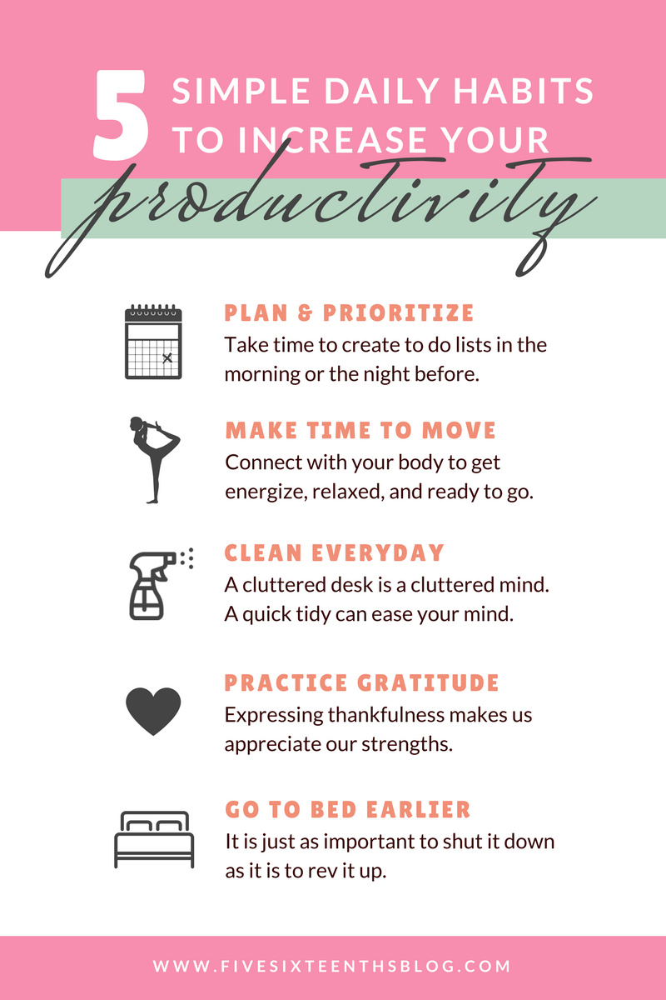

Boost Your Productivity with These 5 Simple Tips
By: Grace
Introduction
Boost Your Productivity with These 5 Simple Tips is a subheading that promises to provide readers with practical and effective ways to increase their productivity. In today's fast-paced world, it's easy to get bogged down in endless to-do lists and feel overwhelmed by the sheer amount of tasks that need to be accomplished. This can lead to stress, burnout, and a sense of frustration with one's performance.
Thankfully, there are proven methods that can help individuals make the most of their time and energy. By adopting simple habits and techniques, we can boost our productivity and achieve more in less time.
This website is dedicated to providing readers with the tools and insights they need to work smarter, not harder. We understand the challenges that individuals face when it comes to managing their time and workload, and we are here to support you every step of the way.
Through our research and experience, we have identified five simple yet powerful tips that can help you increase your productivity and achieve your goals. From prioritizing your tasks to minimizing distractions, each tip is designed to help you optimize your time and energy, and make the most of every day.
So, if you're tired of feeling overwhelmed and unproductive, we invite you to explore our website and discover how you can boost your productivity with these five simple tips. Whether you're a student, a professional, or just looking to improve your personal efficiency, there's something here for everyone. So let's get started and unleash your full potential!
ad space
Tip 1: Prioritize Your Tasks
Have you ever felt overwhelmed by the amount of work you have to do? You probably wished there were more hours in a day, right? Fortunately, you don't need extra hours to be more productive. You just need to learn how to manage your time more efficiently. Sounds easy? Well, it's not always that simple. But don't worry, we are here to help.
One of the most effective ways to increase productivity is to learn how to prioritize your tasks. People often make the mistake of tackling easier tasks first, leaving the most important ones for later. But this method is counterproductive because it leaves very little time for the tasks that actually need more attention. Prioritization is key.
Start by listing all the tasks that you need to do. Once you have everything written down, you need to identify which tasks are urgent and which are not. Urgent tasks are the ones that have short deadlines and need your immediate attention. Non-urgent tasks are those that can be done later or don't have a deadline.
Once you have identified the urgent tasks, you need to focus on them first. Tackle the most urgent task first, then move on to the next-most urgent task after you’ve completed the initial task. Remember that focusing on the most important tasks first will make everything else easier.
It's also very important to manage expectations. Be realistic about how much work you can accomplish in a day. Prioritizing your tasks will help you feel less overwhelmed and more in control of your workload.
Nowadays, most people work from home, and it can be challenging to stay productive when there are so many distractions around. So try this simple productivity tip – prioritize your tasks and watch your productivity soar!
ad space
Tip 2: Take Breaks
Taking breaks is one of the most effective ways to boost your productivity. As counterintuitive as it might sound, taking short breaks throughout your workday can actually help you get more done. By giving your brain a chance to rest and recharge, you can return to your work with renewed energy and focus.
Research shows that taking short breaks can improve cognitive function, including memory and creativity. It can also help reduce stress and fatigue levels, which in turn can help you stay more focused and productive for longer periods of time.
One effective way to take breaks is to follow the Pomodoro technique, which involves working for 25-minute periods followed by 5-minute breaks. After four cycles, take a longer 15-20 minute break. This allows you to work with maximum focus and productivity during the 25-minute work period, while still getting enough rest and recovery time during your breaks.
Another effective way to take breaks is to go for a quick walk outside. Not only does this get your body moving and help reduce the negative effects of sitting for prolonged periods, but it also provides a change of scenery and fresh air, which can help clear your mind and boost your energy levels.
Incorporating regular short breaks into your workday can be a simple but powerful way to boost your productivity. By taking short breaks, you can improve your cognitive function, reduce stress and fatigue levels, and return to your work with renewed focus and energy. Give it a try and see how it can improve your workday!
ad space
Tip 3: Minimize Distractions
In today's fast-paced world, distractions are everywhere. From social media updates to emails from colleagues, it's easy to lose track of time and productivity. That's why minimizing distractions can be a game-changer if you're looking to boost your productivity. When we reduce the number of interruptions that occur during the day, we can focus more intently on the task at hand, complete it faster, and move on to the next task.
So what are some simple ways to minimize distractions? The first and most effective way is to turn off your phone notifications. Studies show that the average person checks their phone every 12 minutes, and this interruption can lead to a loss of focus and time. By disabling notifications or simply putting your phone on silent, you can eliminate this interruption and stay focused for longer periods.
Another way to minimize distractions is to keep a tidy workspace. Clutter can be distracting and reduce our ability to concentrate. When we have a clean and organized workspace, we can focus on the task at hand without any unnecessary distractions.
If you work in a busy environment, noise-cancelling headphones can also be a useful tool to minimize distractions. These headphones help to block out unwanted sounds, allowing us to focus on the task at hand without any external noises interfering.
Taking short breaks throughout the day can also help to minimize distractions. Studies show that taking short breaks can increase productivity and focus. By taking a 5-10 minute break every hour, we can recharge our batteries and return to work with renewed focus and energy.
Finally, if you're finding it challenging to stay focused, consider using a timer or productivity app. These tools can help you track your time and stay on task, minimizing distractions and boosting your productivity.
In conclusion, minimizing distractions is a simple and effective way to boost your productivity. By turning off your phone notifications, keeping a tidy workspace, using noise-cancelling headphones, taking breaks, and using productivity tools, you can stay focused and get more done in less time.
ad space
Tip 4: Keep Yourself Hydrated and Energized
Staying hydrated and energized is key to boosting your productivity. As you go about your busy day, it can be easy to forget to take care of yourself. But by implementing simple habits, such as drinking enough water and eating nutritious snacks, you can maintain your energy levels and stay focused on your goals.
Studies show that dehydration can cause decreased cognitive function, including headaches, fatigue, and difficulty concentrating. In fact, even mild dehydration can negatively affect your mood and energy levels, making it harder to stay motivated and on-task. By staying properly hydrated, you can avoid these negative effects and operate at your best.
To keep yourself energized, it's also important to eat nutritious foods throughout the day. Avoid sugary snacks and opt for protein and fiber-rich options, such as nuts, fruit, and vegetables. These foods will not only provide sustained energy but will also help you feel full and satisfied.
To make it easier to stay hydrated and energized, try incorporating these habits into your daily routine:
1. Carry a water bottle with you at all times and aim to drink at least half your body weight in ounces each day.
2. Set reminders on your phone or calendar to take a break and eat a healthy snack.
3. Keep healthy snacks, such as almonds or an apple, with you at all times.
4. Avoid sugary drinks and instead opt for water, herbal tea or green juice.
5. Aim to get at least 7 hours of sleep each night.
By following these simple tips, you'll find that you have more energy and focus to tackle your work and personal projects. So keep yourself hydrated and energized to stay at the top of your game!
ad space
Tip 5: Use Time Management Techniques
Five Simple Time Management Techniques to Boost Your Productivity
Are you feeling overwhelmed with multiple tasks and tight deadlines? Do you struggle to manage your time effectively while juggling your work and personal life? If your answer is yes, you are not alone. Balancing your professional and personal responsibilities can be a challenging task, but implementing some simple time management techniques can help you become more productive and efficient in your daily routine.
Tip 1: Plan your day
The first step to managing your time effectively is to plan your day ahead. Take a few minutes every morning and make a to-do list, prioritizing the important tasks first. This will help you stay organized and focused throughout the day, ensuring that you accomplish your goals in a timely manner.
Tip 2: Use the Pomodoro Technique
The Pomodoro Technique is a popular time management technique that involves working in intervals of 25 minutes, followed by a five-minute break. This technique helps you stay focused and productive, breaking your work into manageable chunks.
Tip 3: Learn to say no
As much as you want to help others, saying yes to every request can leave you exhausted and unproductive. Learn to say no to activities and requests that do not align with your priorities and goals.
Tip 4: Use productivity apps
There are various apps and tools available that can help you manage your time effectively. Popular apps like Trello, Evernote, and RescueTime can help you organize your tasks, track your time, and stay focused on your goals.
Tip 5: Take breaks
Taking breaks is essential for maintaining productivity and avoiding burnout. Set aside regular breaks throughout the day to recharge your mind and body. Whether it's a 10-minute walk or a quick meditation session, taking breaks can boost your energy and improve your focus.
By implementing these simple time management techniques, you can boost your productivity, reduce stress, and achieve your goals in a more efficient and effective manner. Start by implementing one technique at a time, and soon you'll be well on your way to achieving your full potential!
ad space
Conclusion
As we come to the end of our journey together, let's take a moment to reflect on how far we've come. With these 5 simple productivity tips, we've given you the tools to take back control of your workday and achieve your goals. But the journey doesn't end here - productivity is a lifelong pursuit that requires a commitment to constant improvement.
So what are some key takeaways from our exploration of productivity? First and foremost, we've learned that small changes can have a big impact. By making simple adjustments to your work habits, you can unlock a whole new level of efficiency and effectiveness. Whether it's setting clear goals, prioritizing tasks, or taking breaks when you need them, the small steps you take each day can add up to major gains over time.
We've also learned that productivity isn't just about working harder - it's about working smarter. By taking a strategic approach to your work, focusing on the most important tasks, and delegating where possible, you can achieve more in less time. And by incorporating mindfulness and self-care into your routine, you'll be better equipped to stay focused and energized throughout the day.
In the end, productivity is about finding the balance that works best for you. Everyone's needs and working styles are different, so it's up to you to experiment and find the routine that brings out your best work. And if you ever find yourself struggling to stay motivated or focused, just remember - you have the power to make meaningful changes in your day-to-day work habits, and the rewards are well worth the effort. So go forth, be productive, and make the most of every day!
ad space